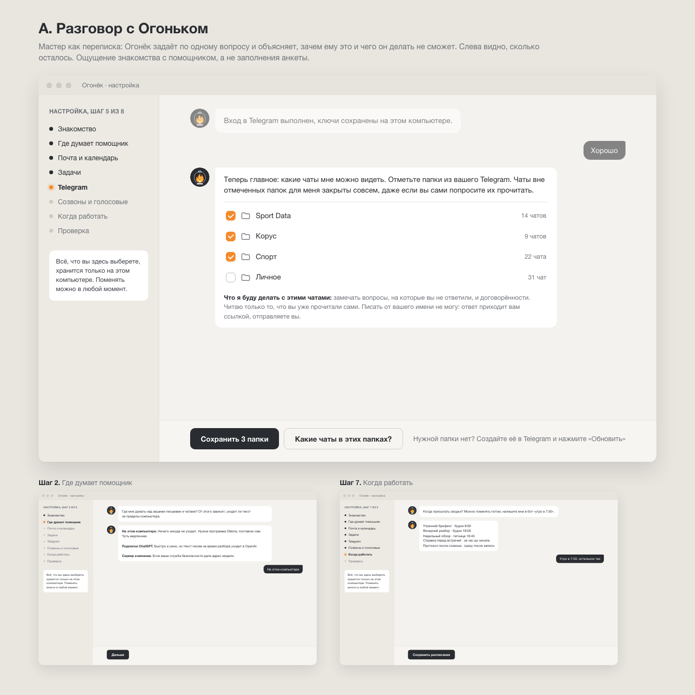
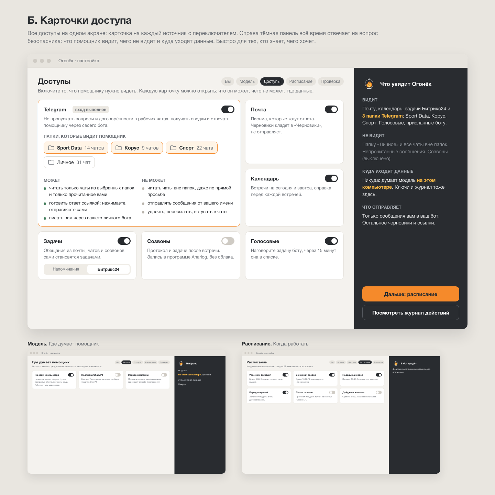
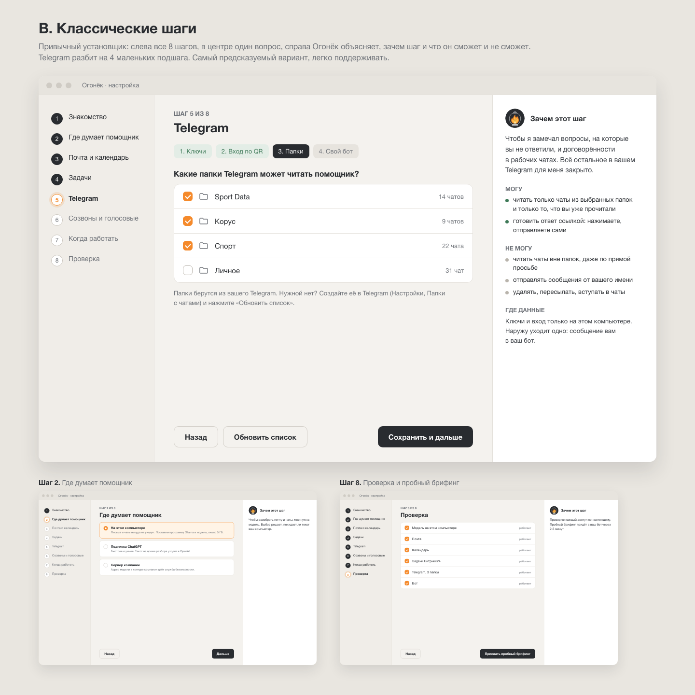

Ключевой экран у всех трёх: подключение Telegram с выбором папок. Мастер открывается двойным щелчком по «Установить.command», терминал и git не видны. Подробные макеты с соседними шагами в отдельных файлах.

Знакомство с помощником в переписке, по одному вопросу.
Плюс: Тепло, понятно новичку, сразу задаёт голос помощника.
Минус: Дольше остальных, назад вернуться сложнее.

Все доступы на одном экране, справа итог «что видит и куда уходят данные».
Плюс: Быстро, итог удобно показать безопаснику.
Минус: Новичку много всего сразу.

Привычный установщик с блоком «зачем этот шаг».
Плюс: Предсказуемо, проще всего сделать и поддерживать.
Минус: Меньше характера, похоже на обычный установщик.